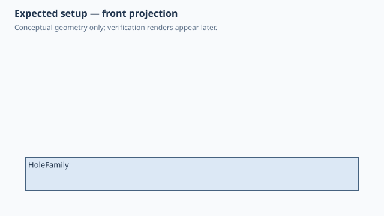

Forge model example
Native Hole family
What this example makes
One plate contains four editable native Hole features: Ø6 simple, Ø6/Ø12 x 4 counterbore, Ø6/Ø12 90° countersink, and an M6 modeled threaded hole using an explicit Ø5 tap drill.


Forge code
This is the complete Forge source used for this example.
"""Qualification fixture for the four native Hole-family features."""
class HoleFamily:
width = 120.0
depth = 40.0
thickness = 12.0
def build(self):
body = Box(
self.width,
self.depth,
self.thickness,
anchor=Anchor.BOTTOM,
)
top = self.thickness
body = body + Hole(
d=6,
direction=(0, 0, -1),
).at(-45, 0, top)
body = body + CounterboreHole(
d=6,
counterbore_d=12,
counterbore_depth=4,
direction=(0, 0, -1),
).at(-15, 0, top)
body = body + CountersinkHole(
d=6,
countersink_d=12,
countersink_angle=90,
direction=(0, 0, -1),
).at(15, 0, top)
body = body + ThreadedHole(
thread="M6",
d=5,
direction=(0, 0, -1),
thread_depth=10,
modeled=True,
ease_out="short",
).at(45, 0, top)
return body
HoleFamily()
API used
Hole(...); CounterboreHole(...); CountersinkHole(...); ThreadedHole(...)
Reference code
The same model is written independently with the reference libraries below. This makes it easier to compare modelling style and the resulting shape.
PythonSCAD
"""PythonSCAD CSG reference for the Hole family.
The threaded case is represented by its Ø5 M6 tap-drill envelope; thread
metadata and modeled thread geometry are SolidCraft-native qualification.
"""
from pythonscad import *
plate = cube([120, 40, 12], center="00-")
simple = cylinder(d=6, h=16).translate([-45, 0, -2])
counterbore = (
cylinder(d=6, h=16).translate([-15, 0, -2])
| cylinder(d=12, h=4).translate([-15, 0, 8])
)
countersink = (
cylinder(d=6, h=16).translate([15, 0, -2])
| cylinder(d1=6, d2=12, h=3).translate([15, 0, 9])
)
tap_drill = cylinder(d=5, h=16).translate([45, 0, -2])
model = plate - (simple | counterbore | countersink | tap_drill)

Reference result checks · PASS · 3/3 passed
| Check | Status | Expected | Measured | Detail |
|---|---|---|---|---|
| bounds | PASS | {'min': [-60.0, -20.0, 0.0], 'max': [60.0, 20.0, 12.0]} | {'min': [-60.0, -20.0, 0.0], 'max': [60.0, 20.0, 12.0]} | max difference 0.0 mm; allowed 0.5 mm |
| watertight | PASS | True | True | closed mesh |
| surface distance probes | PASS | 4 surface measurements | 4/4 within tolerance | largest difference 0.190301 mm |
pyBOSL2
"""pyBOSL2 CSG reference for the Hole family.
The threaded case is represented by its Ø5 M6 tap-drill envelope; thread
metadata and modeled thread geometry are SolidCraft-native qualification.
"""
from pybosl2 import Anchor, cuboid, cyl
plate = cuboid([120, 40, 12], anchor=Anchor.BOTTOM)
simple = cyl(diameter=6, height=16).translate([-45, 0, 6])
counterbore = (
cyl(diameter=6, height=16).translate([-15, 0, 6])
| cyl(diameter=12, height=4, anchor=Anchor.TOP).translate([-15, 0, 12])
)
countersink = (
cyl(diameter=6, height=16).translate([15, 0, 6])
| cyl(diameter1=6, diameter2=12, height=3, anchor=Anchor.BOTTOM).translate([15, 0, 9])
)
tap_drill = cyl(diameter=5, height=16).translate([45, 0, 6])
model = plate - (simple | counterbore | countersink | tap_drill)

Reference result checks · PASS · 3/3 passed
| Check | Status | Expected | Measured | Detail |
|---|---|---|---|---|
| bounds | PASS | {'min': [-60.0, -20.0, 0.0], 'max': [60.0, 20.0, 12.0]} | {'min': [-60.0, -20.0, 0.0], 'max': [60.0, 20.0, 12.0]} | max difference 0.0 mm; allowed 0.5 mm |
| watertight | PASS | True | True | closed mesh |
| surface distance probes | PASS | 4 surface measurements | 4/4 within tolerance | largest difference 0.190301 mm |
CadQuery
"""CadQuery geometry reference for the Hole family.
The threaded case is represented by its Ø5 M6 tap-drill envelope; SolidCraft
native qualification separately proves thread metadata and modeled thread.
"""
import cadquery as cq
part = cq.Workplane("XY").box(120, 40, 12, centered=(True, True, False))
part = part.faces(">Z").workplane().pushPoints([(-45, 0)]).hole(6)
part = part.faces(">Z").workplane().pushPoints([(-15, 0)]).cboreHole(6, 12, 4)
part = part.faces(">Z").workplane().pushPoints([(15, 0)]).cskHole(6, 12, 90)
part = part.faces(">Z").workplane().pushPoints([(45, 0)]).hole(5)
model = cq.Assembly()
model.add(part, name="hole_family")

Reference result checks · PASS · 3/3 passed
| Check | Status | Expected | Measured | Detail |
|---|---|---|---|---|
| bounds | PASS | {'min': [-60.0, -20.0, 0.0], 'max': [60.0, 20.0, 12.0]} | {'min': [-60.0, -20.0, 0.0], 'max': [60.0, 20.0, 12.0]} | max difference 0.0 mm; allowed 0.5 mm |
| watertight | PASS | True | True | closed mesh |
| surface distance probes | PASS | 4 surface measurements | 4/4 within tolerance | largest difference 0.00351838 mm |
build123d
"""build123d 0.12 geometry reference for the Hole family.
build123d core has native Hole, CounterBoreHole and CounterSinkHole operations.
It has no equivalent native tapped-hole metadata feature, so the fourth
reference cut represents the qualified M6 tap drill envelope (Ø5) only.
"""
from build123d import (
Align,
Axis,
Box,
BuildPart,
CounterBoreHole,
CounterSinkHole,
Hole,
Locations,
)
bottom = (Align.CENTER, Align.CENTER, Align.MIN)
with BuildPart() as model:
Box(120, 40, 12, align=bottom)
top = model.faces().sort_by(Axis.Z)[-1]
with Locations(top):
with Locations((-45, 0)):
Hole(radius=3)
with Locations((-15, 0)):
CounterBoreHole(
radius=3,
counter_bore_radius=6,
counter_bore_depth=4,
)
with Locations((15, 0)):
CounterSinkHole(
radius=3,
counter_sink_radius=6,
counter_sink_angle=90,
)
with Locations((45, 0)):
Hole(radius=2.5)

Reference result checks · PASS · 3/3 passed
| Check | Status | Expected | Measured | Detail |
|---|---|---|---|---|
| bounds | PASS | {'min': [-60.0, -20.0, 0.0], 'max': [60.0, 20.0, 12.0]} | {'min': [-60.0, -20.0, 0.0], 'max': [60.0, 20.0, 12.0]} | max difference 0.0 mm; allowed 0.5 mm |
| watertight | PASS | True | True | closed mesh |
| surface distance probes | PASS | 4 surface measurements | 4/4 within tolerance | largest difference 0.00351838 mm |
How Forge builds it in SolidCraft
Each Forge Hole-family object lowers one-to-one to one native solid.hole command. Counterbore and countersink use the native hole type fields; ThreadedHole uses native thread metadata/modeling fields. No sketch or helper subtraction solid is synthesized.
Show generated SolidCraft commands
parameters.add
parameters.add
parameters.add
solid.box
solid.hole
solid.hole
solid.hole
solid.holeSolidCraft result
Built and measured with SolidCraft 0.42.0. Open the measurement details to inspect body sizes and editable parameters.
Original model · 1 bodies
Editable parameters
| Name | Value |
|---|---|
width | 120.0 |
depth | 40.0 |
thickness | 12.0 |
Body size
| Body | Minimum | Maximum |
|---|---|---|
| HoleFamily | [-60, -20, -1.77636e-15] | [60, 20, 12] |
Semantic validation · PASS · 5/5 checks passed
| Status | Level | Check | Expected | Actual |
|---|---|---|---|---|
| PASS | Q4 | declared target geometry | [{"label": "HoleFamily", "min": [-60, -20, 0], "max": [60, 20, 12]}] | [{"min": [-60.0, -20.0, -1.7763568394002635e-15], "max": [60.0, 20.0, 12.000000000000009]}] |
| PASS | Q4 | one Hole-family plate body | 1 | 1 |
| PASS | Q4 | Hole-family outer bounds stay unchanged | {"min": [-60, -20, 0], "max": [60, 20, 12]} | {"max": [60.0, 20.0, 12.000000000000009], "min": [-60.0, -20.0, -1.7763568394002635e-15]} |
| PASS | Q4 | native history contains four Hole features | 4 | [["HoleFeature", "Hole1"], ["HoleFeature", "Hole2"], ["HoleFeature", "Hole3"], ["HoleFeature", "Hole4"]] |
| PASS | Q4 | native Hole family needs no helper sketches | 0 | 0 |
Visual result
Actual is the SolidCraft render. Goal shows the expected shape. Overlay places both on top of each other so differences are easy to see.
Top

Current SolidCraft top view

Expected geometry in the same top view

Expected geometry over the actual top view
Front

Current SolidCraft front view

Expected geometry in the same front view

Expected geometry over the actual front view
Iso
Current SolidCraft iso view

Expected geometry in the same iso view

Expected geometry over the actual iso view
Show extra saved-render views
Right

Current SolidCraft right view

Expected geometry in the same right view

Expected geometry over the actual right view
Technical test details
Q1 and Q2 tests
These are the exact automated tests used for this example.
- Q1 PASS
- Q2 PASS
Geometry checks
These are the sizes and measurement points used by the automated checks.
| Body | Minimum | Maximum |
|---|---|---|
| HoleFamily | [-60, -20, 0] | [60, 20, 12] |
- Is the size check enough for this model? No — All four Hole-family features leave the outer plate envelope unchanged. 3D probes are required for the simple bore, counterbore recess, countersink cone and threaded tap-drill envelope; native history separately proves thread metadata and modeled-thread intent.
- Views checked: top, front, iso
- Internal features checked: 6
- Closed solid expected: True
- Surface points checked: 4
Show all geometry check points
Internal features
- simple Ø6: centre
[-45.0, 0.0], diameter 6.0 mm, Z[0.0, 12.0] - counterbore main Ø6: centre
[-15.0, 0.0], diameter 6.0 mm, Z[0.0, 12.0] - counterbore recess Ø12 x 4: centre
[-15.0, 0.0], diameter 12.0 mm, Z[8.0, 12.0] - countersink main Ø6: centre
[15.0, 0.0], diameter 6.0 mm, Z[0.0, 12.0] - countersink entry Ø12: centre
[15.0, 0.0], diameter 12.0 mm, Z[12.0, 12.0] - M6 tap drill Ø5: centre
[45.0, 0.0], diameter 5.0 mm, Z[0.0, 12.0]
Surface measurement points
- simple bore center: point
[-45.0, 0.0, 6.0]→ 3.0 mm (±0.3 mm) - counterbore recess wall: point
[-10.5, 0.0, 10.0]→ 1.5 mm (±0.3 mm) - countersink 90 degree cone: point
[18.5, 0.0, 10.5]→ 0.70710678 mm (±0.35 mm) - M6 tap-drill core: point
[45.0, 0.0, 6.0]→ 2.5 mm (±0.35 mm)
Saved-design test
No saved-model change is required. No saved-design mutation is required in this first Hole-family qualification; Q1-Q4 prove API, native command identity and geometry while Q6 proves the visible forms.
Raw test files
- Forge fixture source
- PythonSCAD reference source
- pyBOSL2 reference source
- CadQuery reference source
- build123d reference source
- Generated command JSON in build output
- results.json
- measurements.json
- joint-inspect.json
- model.sc
- model.step
- qualification-result.json
- validation.json
- visual-validation.json
- camera-front.json
- camera-iso.json
- camera-right.json
- camera-top.json
- q1-case-evidence.txt
- q2-case-evidence.txt
- Native snapshot: model.png
- Native snapshot: model-top.png
- Native snapshot: goal-top.png
- Native snapshot: overlay-top.png
- Native snapshot: model-front.png
- Native snapshot: goal-front.png
- Native snapshot: overlay-front.png
- Native snapshot: visual-diff-front.png
- Native snapshot: model-right.png
- Native snapshot: goal-right.png
- Native snapshot: overlay-right.png
- Native snapshot: visual-diff-right.png
- Native snapshot: model-iso.png
- Native snapshot: goal-iso.png
- Native snapshot: overlay-iso.png
- Native snapshot: visual-diff-iso.png
- Reference evidence: reference-pythonscad/result.json
- Reference evidence: reference-pythonscad/model.stl
- Reference evidence: reference-pythonscad/model-front.png
- Reference evidence: reference-pythonscad/model-right.png
- Reference evidence: reference-pythonscad/model-iso.png
- Reference evidence: reference-pybosl2/result.json
- Reference evidence: reference-pybosl2/model.stl
- Reference evidence: reference-pybosl2/model-front.png
- Reference evidence: reference-pybosl2/model-right.png
- Reference evidence: reference-pybosl2/model-iso.png
- Reference evidence: reference-cadquery/result.json
- Reference evidence: reference-cadquery/model.stl
- Reference evidence: reference-cadquery/model-front.png
- Reference evidence: reference-cadquery/model-right.png
- Reference evidence: reference-cadquery/model-iso.png
- Reference evidence: reference-build123d/result.json
- Reference evidence: reference-build123d/model.stl
- Reference evidence: reference-build123d/model-front.png
- Reference evidence: reference-build123d/model-right.png
- Reference evidence: reference-build123d/model-iso.png


Reference documentation
- build123d: build123d 0.12.0 provides native Hole, CounterBoreHole and CounterSinkHole operations. Its core library has no equivalent native tapped-hole metadata feature, so the fourth reference cut is the Ø5 M6 tap-drill envelope.
- CadQuery: CadQuery independently expresses simple, counterbore and countersink geometry; the threaded reference uses the Ø5 tap-drill envelope because native thread metadata is SolidCraft-specific.
- PythonSCAD: Constructive geometry independently reproduces the four hole envelopes; the thread reference is the Ø5 tap-drill envelope.
- pyBOSL2: Constructive geometry independently reproduces the four hole envelopes; the thread reference is the Ø5 tap-drill envelope.